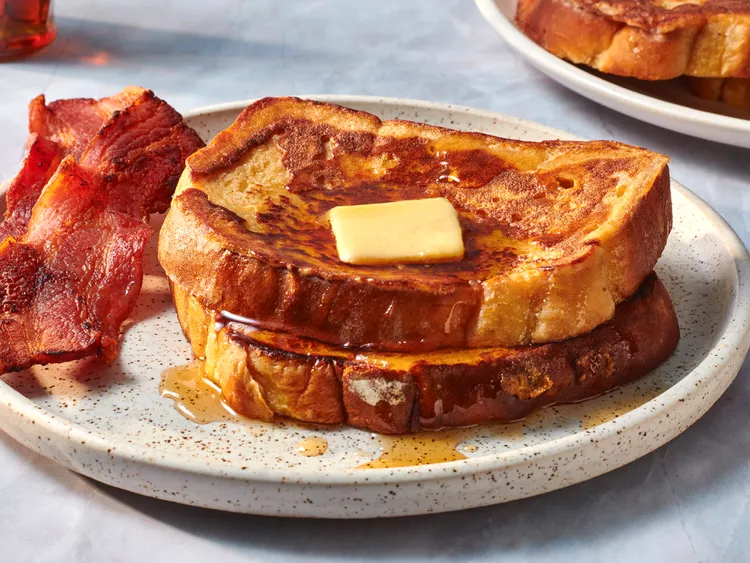

French Toast

Description
The secret ingredient in this fluffy French toast recipe: all-purpose flour! Flour binds the liquids together, which creates a more traditional “batter” and helps prevent soggy results. This extra ingredient ensures the French toast is crispy on the outside, but soft and fluffy on the inside.
Ingredients
- Flour
- Milk
- Eggs
- Sugar
- Vanilla
- Cinnamon
- Salt
- Bread
Steps
- Slowly whisk the milk into the flour, then whisk in the remaining ingredients.
- Saturate the bread slices in the batter.
- Cook the French toast on a lightly oiled griddle or pan until golden on both sides.
- Top this French toast with maple syrup, powdered sugar, and fresh fruit (such as sliced strawberries and bananas) for a beautiful and delicious presentation.